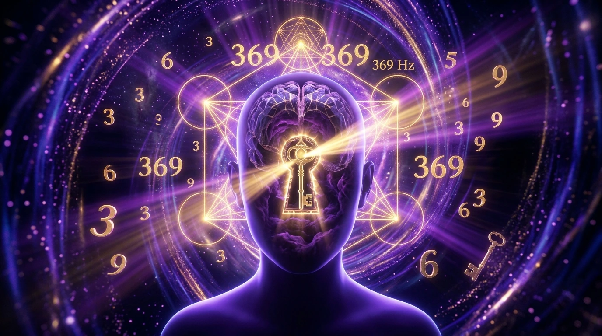

Has leído libros de autoayuda, repetido afirmaciones frente al espejo cientos de veces y colocado mapas de sueños en tu habitación. Sin embargo, pasan los meses y sientes que tus deseos financieros o personales siguen estando tan lejos como el primer día. La frustración es inevitable: ¿por qué la Ley de Atracción parece funcionarle a algunos y a ti no?
La respuesta es simple: lo que te han enseñado en redes sociales sobre la manifestación está lleno de malentendidos comerciales. La Ley de Atracción no es magia ni pensamiento mágico desintegrado de la realidad; es física de la resonancia y neurobiología aplicada.
A continuación, desmitificamos los 7 errores más extendidos que están bloqueando tu capacidad de atracción y cómo corregirlos hoy mismo.
Mito 1: "Solo necesitas pensar en positivo todo el día"
El pensamiento consciente representa apenas un 5% del procesamiento total de tu cerebro. El 95% restante está gobernado por el subconsciente, donde residen tus creencias limitantes, traumas infantiles y condicionamientos del pasado.
Puedes repetir la frase "Soy millonario" cien veces por la mañana, pero si tu sistema nervioso alberga una creencia subconsciente arraigada de que "el dinero es escaso o peligroso", esa frecuencia de duda anulará por completo tus intenciones verbales.
Mito 2: "Visualizar es suficiente para atraer"
Ver imágenes mentales no atrae nada por sí solo si no está acompañado de una firme alineación electroquímica. Como explicaba Nikola Tesla, el universo responde a la energía, la frecuencia y la vibración.
La visualización funciona únicamente cuando logra cambiar el estado eléctrico de tu cerebro (alcanzando ondas Alfa o Theta) y el estado magnético de tu corazón (generando emociones elevadas como gratitud o certeza). Sin esta resonancia cuántica, la visualización es simplemente un ensueño pasivo.
Mito 3: "Si sientes emociones negativas, arruinas tu manifestación"
El miedo a sentir rabia, tristeza o frustración genera un fenómeno conocido como positivismo tóxico. Reprimir una emoción negativa no la elimina; la entierra profundamente en tu subconsciente, incrementando el estrés biológico.
La clave no es evitar las emociones de baja frecuencia, sino aprender a transitarlas rápidamente sin identificarte con ellas, permitiendo que la coherencia cerebral retome su estado armónico natural.
Sintoniza tu Subconsciente en Minutos
Supera los bloqueos del ego y alcanza un estado profundo de ondas Theta usando nuestro Audio Cuántico en formato máster WAV afinado a la frecuencia pura 369 Hz.
DESCUBRIR EL AUDIO CUÁNTICO 3-6-9Mito 4: "Debes obsesionarte con el resultado final"
Estar constantemente revisando la cuenta bancaria para ver si el dinero "ya llegó" transmite una señal clara al campo unificado: Carestía y Desesperación. La física de la atracción establece que atraes lo que eres y lo que sientes en el presente, no lo que desesperadamente deseas.
El secreto para manifestar con éxito es definir la intención con claridad y luego soltar el apego al cómo y cuándo, permitiendo que la energía fluya sin resistencia.
Mito 5: "La ciencia desmiente la Ley de Atracción"
Si bien la versión mística de la cultura popular carece de rigor, la Física Cuántica y la Neurociencia moderna confirman los principios fundamentales del campo de observador. Experimentos sobre el entrelazamiento cuántico y el Sistema de Activación Reticular (SAR) del cerebro demuestran que tu enfoque enfocado literalmente filtra e influye en la realidad física que percibes.
Mito 6: "No hace falta tomar acción en el mundo físico"
Atraer no significa sentarse a esperar que un sobre lleno de dinero caiga del techo. La manifestación auténtica genera Acción Inspirada. Cuando sincronizas tus ondas cerebrales con la frecuencia de la abundancia, tu mente detecta oportunidades, ideas y sincronicidades que antes eran invisibles para tu percepción estresada, impulsándote a actuar con precisión.
Mito 7: "Todos los métodos y audios de manifestación son iguales"
Este es quizás el error técnico más grave. Miles de personas intentan reprogramar su mente usando audios comprimidos de YouTube o plataformas gratuitas. La realidad es que los archivos MP3 eliminan las microfrecuencias binaurales necesarias para arrastrar al cerebro hacia la banda de onda Theta.
Sin una señal sonora pura en alta definición (máster de 24 bits), las neuronas no logran entrar en sincronía armónica, haciendo que el proceso sea lento, tedioso o ineficaz.
Pasa del Esfuerzo a la Resonancia Pura
Deja atrás los mitos y utiliza la herramienta acústica diseñada para influir directamente en tu mente subconsciente desde el primer día.
OBTENER ACCESO INMEDIATO AL AUDIO 369Conclusión: Cómo Manifestar de Forma Científica y Real
Para que la Ley de Atracción trabaje a tu favor, debes dejar de tratarla como un deseo de la suerte y empezar a utilizarla como una **tecnología de alineación personal**. Sintonizar tu mente requiere coherencia entre lo que piensas, lo que sientes y la frecuencia en la que vibra tu sistema nervioso.
Cuando utilizas herramientas de acústica cuántica sin compresión para inducir estados de profunda receptividad subconsciente, disuelves las resistencias de toda una vida y te conectas directamente con la matriz de creación que Nikola Tesla descifró.